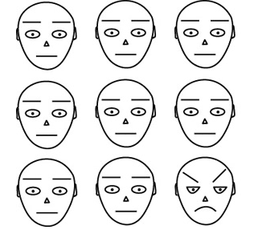
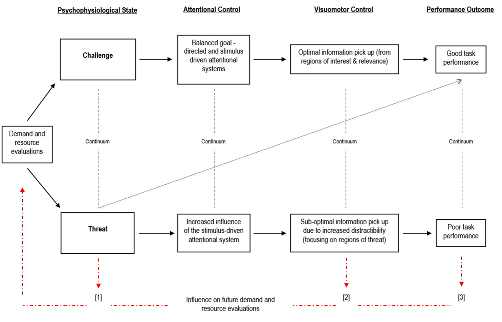

EIM09
Emocje a procesy poznawcze
Krzysztof Basiński
Emocje a procesy poznawcze
- Jakie są związki między jednym a drugim?
- Co jest “pierwotne” a co “wtórne”?
- Czy na pewno emocje i procesy poznawcze to dwie różne rzeczy?
Emocje są pierwotne
- Kartezjusz, Zajonc
- Emocje są pierwotne, starsze ewolucyjnie, szybsze itd.
- Człowiek najpierw reaguje emocjonalnie, później analizuje poznawczo
Emocje są wtórne, poznanie jest pierwotne
- Człowiek analizuje i interpretuje otaczający go świat
- Emocje są skutkiem poznawczej oceny sytuacji
- Patrz - teorie oceny
Czy emocje i poznanie aż tak się różnią?
- Sporna kwestia
- Brak precyzyjnej definicji emocji, proc. poznawczych
- Zgoda co do tego, że emocje i poznanie wpływają na siebie
- Coraz więcej badaczy dostrzega, że być może to to samo (PP)
Andy Clark, PP
- Emotions tied to first place inextricably mixed with stuff a bit like belief (cognition)
Emocje a uwaga
- Obiekty ważne emocjonalnie przyciągają uwagę
- Np. automatycznie rozpoznajemy w tłumie osoby, które:
- bardzo lubimy
- bardzo nie lubimy
Zagrożenie a uwaga
- Obiekty zagrażające najlepiej przyciągają uwagę
- Szybciej wykrywamy węża pośród kwiatów niż kwiat pośród węży (Öhman, Flykt, & Esteves, 2001)
- Fundamentalna rola ewolucyjna (LeDoux)
Ohman et al., 2001

Ohman et al., 2001

Stres a uwaga
- Powoduje globalne zmiany w organizmie – aktywność współczulna, wydzielanie adrenaliny, kortykosteroidów itd.
- Te zmiany oddziałują na neuroprzekaźnictwo – istotne konsekwencje dla procesów psychicznych
- Przystosowanie ewolucyjne – reakcja walki-ucieczki
Dwa tryby działania uwagi
- Zorientowany na zadanie (PFC)
- Sensoryczno-czujnościowy (ciało migdałowate)
- W ostrym stresie uwaga przełącza się w tryb sensoryczno-czujnościowy
Tryb sensoryczno-czujnościowy – konsekwencje percepcyjne
- Zwiększenie czujności (Schackman et al., 2011, J Neurosci)
- Łatwiejsze dostrzeganie kontrastów (Phelps et al., 2006, Psychol Sci)
- Ekspresja strachu zwiększa pole widzenia, szybkość ruchu gałek ocznych, ilość wdychanego powietrza (Susskind et al., 2008, Nat Neurosci)
- Poszukiwanie zagrożeń
Tryb sensoryczno-czujnościowy – konsekwencje
- Pogorszenie wykonywania zadań wymagających kontroli uwagi
- Pogorszenie wykonywania zadań wymagających planowania
- Podatność na dystraktory
- Wynika z ograniczonej ilości zasobów uwagi
Vine et al. 2016
